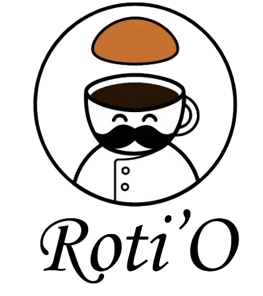

Selamat Datang Di Pembuatan Roti'O
☕☕

Roti O, legenda rasa dengan aroma kopi yang memikat hati, tersohor di stasiun KRL, Busway, dan MRT Jakarta. Wanginya sudah tercium dari kejauhan!
Bahan-Bahan Roti O
| No. |
Adonan Roti |
Topping Kopi |
Isian Kopi |
| 1 |
300 gram terigu protein tinggi |
100 gram mentega |
100 gram mentega (dingin, potong dadu) |
| 2 |
50 gram gula pasir |
100 gram gula halus |
|
| 3 |
5 gram ragi |
2 butir telur |
|
| 4 |
150 ml air hangat |
120 gram terigu protein sedang |
|
| 5 |
1/2 sdt garam |
2 sdm kopi bubuk + 2 sdm air panas (larutkan) |
|
| 6 |
25 gram susu bubuk |
100 gram gula halus (sesuai selera) |
|
| 7 |
50 gram mentega |
1/2 sdt baking powder |
|
| 8 |
1 butir telur |
|
|
Tahapan Pembuatan
Membuat Adonan
- Campur susu bubuk, air hangat, ragi, dan gula. Diamkan 10 menit hingga berbuih.
- Campur tepung, telur, dan campuran ragi, uleni hingga setengah kalis.
- Tambahkan garam dan mentega, uleni hingga kalis elastis (tes windowpane).
- Bulatkan adonan, tutup dengan kain lembab, diamkan 1 jam hingga mengembang dua kali lipat.
Membentuk Roti
- Kempiskan adonan, bagi menjadi 12 bagian sama rata.
- Pipihkan, beri potongan mentega dadu di tengah, bulatkan rapat.
- Susun di loyang dengan jarak, diamkan lagi 30 menit.
Membuat Topping Kopi
- Kocok mentega dan gula halus hingga lembut.
- Masukkan telur satu per satu, kocok rata.
- Tambahkan larutan kopi, aduk rata.
- Masukkan tepung dan baking powder, aduk hingga halus.
Memanggang
- Panaskan oven pada 180°C.
- Semprotkan topping melingkar di atas roti, jangan terlalu penuh.
- Panggang 15-20 menit hingga roti mengembang dan topping retak serta harum.
- Sajikan hangat untuk rasa terbaik.
Tips Anti Gagal
- Pastikan air hangat suam-suam kuku agar ragi tetap aktif.
- Gunakan mentega dingin untuk isian agar meleleh sempurna saat dipanggang.